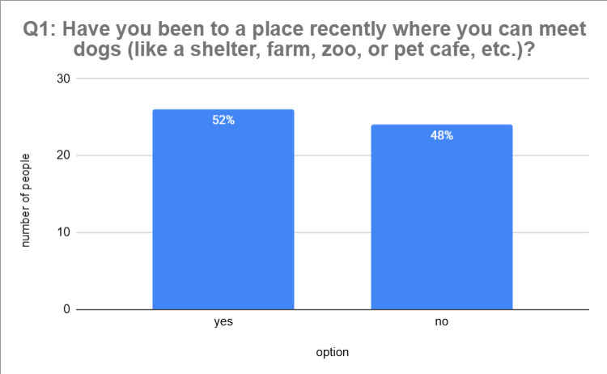
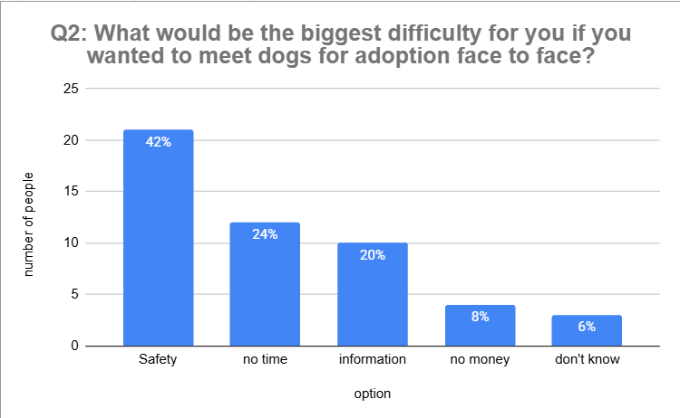
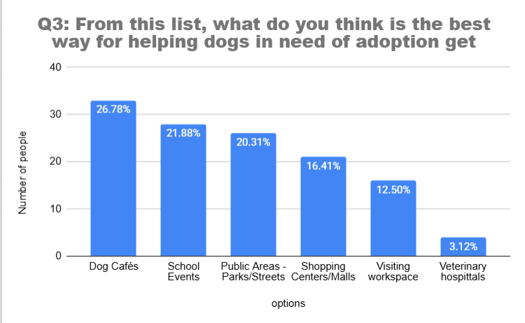
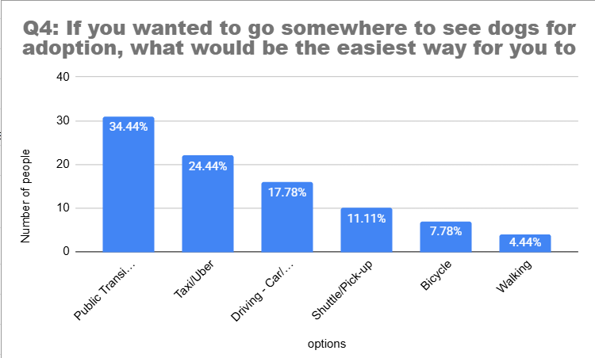
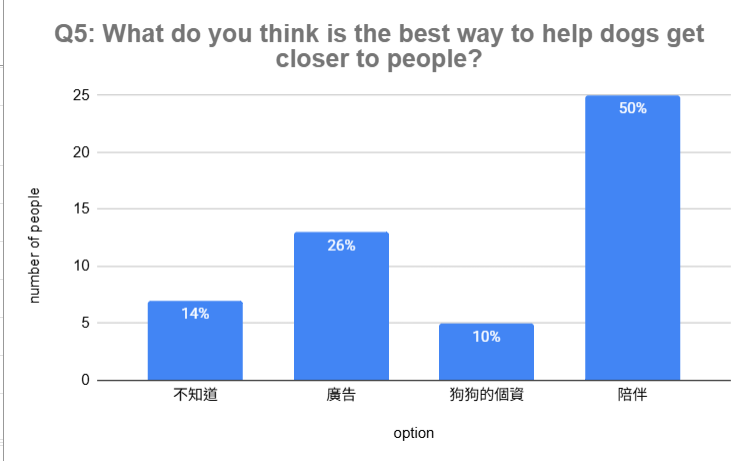

Alfie
Alfie
Data
Characteristics of the Sample
Characteristics of the Sample
1.1 Total Sample Size
Our survey group has 50 respondents.
1.2 Age group
Our age data has 4 groups, 10-19/ 20-39/ 40-59/ 60over, these groups can help us easily see the young people and the old people.

Our survey data percentages are very close together, so I chose pie chart to show the data.

If you want people to easily see the percentages, you can choose a pie chart, if you want to see the different of options. Our age distribution is very large differents.
Survey Data Analysis
Survey Data Analysis
Q1: Have you been to a place recently where you can meet dogs (like a shelter, farm, zoo, or pet cafe, etc.)?
This is our Q1; we wanna know how long people have gone somewhere and whether they have dogs. This question is a single choice, like yes or no, and the question collect categorical. We chose a bar graph because easily to see the contrast. in this question have 52% of people chose yes; this mean 50 people have half of people went to a place has dog, and 48% of people chose no; this might mean 50 people have half of people diden’t went to a place has dog.

Q2: What would be the biggest difficulty for you if you wanted to meet dogs for adoption face to face?
This is our Q2; we wanna know what the biggest difficulty is, and how many people will go to a place with a dog. This question is open-ended; you can say everything you want to say, and the question collects categorical data. Divided into several major categories. This question is a bar graph; because easily to see the contrast. In this question, 42% of people choose safety; this mean people think safety is the most important thing that people choose. 6% of people choose don’t know; maybe they don’t even think.

Q3: From this list, what do you think is the best way for helping dogs in need of adoption get noticed?
This is our Q3; what thing can actually help the dog adoption rate go up. This question is multiple-selection; you can choose more than one. The question collects categorical data. We chose a bar graph because easily to see the contrast. In this question, 26.78% of people choose dog cafes because dog cafes are more relaxing. 3.12% of people choose veterinary hospitals, people think that hospitals are a matter of life and death.

Q4: If you wanted to go somewhere to see dogs for adoption, what would be the easiest way for you to travel?
This is our Q4; what is the best way to go to the place have animal. This question is multiple-selection; you can choose more than one. the question collects categorical data. We choose Bar graph, because it is easy to see the contrast. In this question, 34.44% of people choose MRT/ Bus, people think public transport is cheaper than other options. 7.44% of people choose walking, because shelters are very far away, so just a few people choose this option.

Q5: What do you think is the best way to help dogs get closer to people?
This is our Q5; what is the best way to bring dogs and people closer together. This question is Open-ended, you can say everything you want to say. This question collects categorical data. Divided into several major categories. This question is a bar graph because it is easy to see the contrast. In this question, 50% of people choose accompany, dogs need a lot of accompany, so that’s very important, 10% of people choose dog's personal information; dog's personal information is not important than accompany
